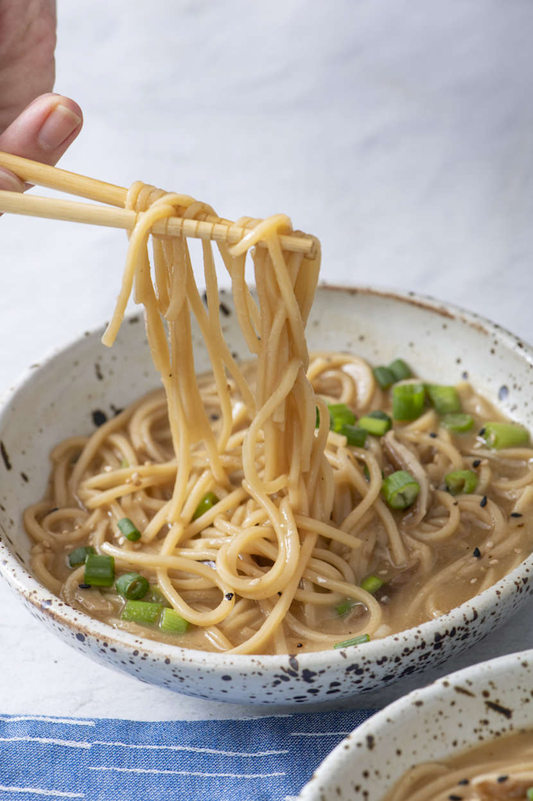

Healthy Ramen Noodle Soup

Make this warming bowl of healthy ramen noodle soup for dinner tonight!
Ingredients
- 1 32 Oz Box of Chicken or Vegetable Stock
- 1 Cup water
- 2 Tbsp White or Yellow Miso
- 2 (3-ounce) packages ramen noodles
- 4 Shiitake mushrooms, sliced thin
- 2 Tbsp soy sauce
- 2 Tbsp Mirin
- 1/2 Tsp garlic powder
- 1/4 Tsp onion powder
- 1/4 Cup Scallions, green & white, sliced
Steps
- In a large saucepan add the chicken stock, water, miso and bring to a boil.
- Add the remaining ingredients* and cook for 3 minutes or until the ramen noodles are soft.
- Add the scallions and serve.